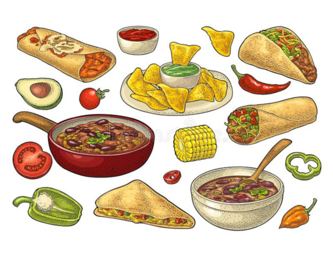
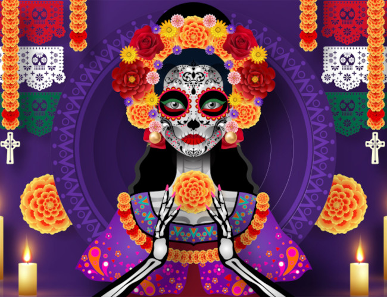
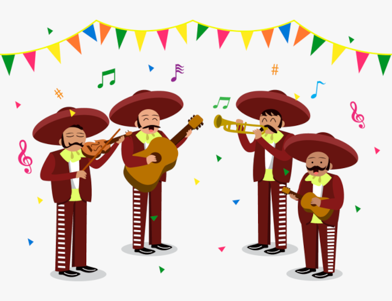
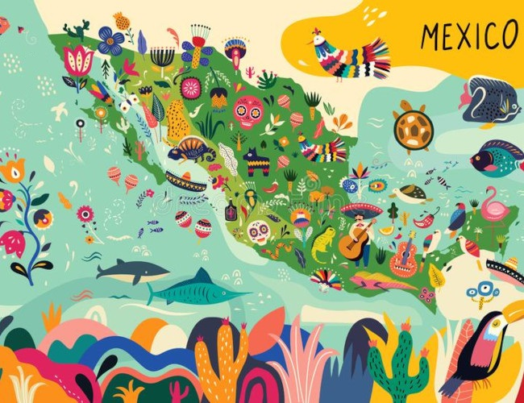
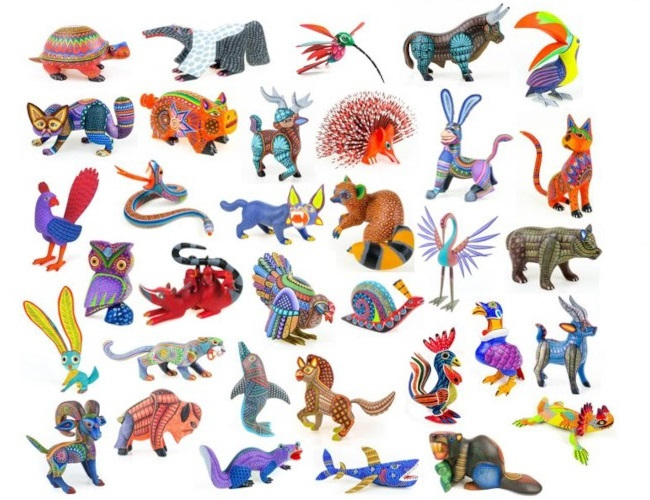

O țară bogată în istorie, tradiție și cultură, Mexicul este format din 31 de state și un district federal. Este a treia țară ca mărime din America Latină și are una dintre cele mai mari populații - mai mult de 100 de milioane - ceea ce face din aceasta casa mai multor vorbitori de spaniolă decât orice altă națiune din lume.
În ciuda schimbărilor politice și sociale care au avut loc de-a lungul secolelor, dovezile culturilor și evenimentelor trecute sunt evidente peste tot în Mexic.
Multe dintre zonele rurale ale Mexicului sunt încă locuite de indigeni ale căror stiluri de viață sunt destul de asemănătoare cu cele ale strămoșilor lor. În plus, multe ruine precolumbiene mai există în întreg Mexic, inclusiv orașul antic Teotihuacán și piramidele mayașe de la Chichén Itzá și Tulum. Amintiri ale trecutului colonial sunt evidente în arhitectura orașelor precum Taxco și Querétaro.
Mancare Mexicană

Bucătăria mexicană este o bucătărie complexă și străveche, cu tehnici și abilități dezvoltate de-a lungul a mii de ani de istorie. Este creat mai ales cu ingrediente originare din Mexic, precum și cele aduse de conchistadorii spanioli, cu unele influențe noi de atunci.
Bucătăria mexicană a fost influențată de apropierea de granița dintre SUA și Mexic. De exemplu, se credea că burritourile au fost inventate pentru transportul mai ușor al fasolei, învelindu-le în tortilla pentru munca pe câmp.
Modificări ca acestea au adus bucătăria mexicană în Statele Unite, unde state precum Arizona au adaptat în continuare burrito-urile prin prăjirea lor, creând chimichanga modernă.
Ziua Morților

Tradiția Zilei Morților ("Dia de Muertos") constă în a construi altare private ("ofrendas") care să conțină alimentele și băuturile preferate, precum și fotografiile și suvenirurile celor plecați. Intenția este de a încuraja vizitele sufletelor, astfel încât sufletele să audă rugăciunile și cuvintele celor vii îndreptate către ei.
Aceste altare sunt adesea plasate acasă sau în spații publice precum școli și biblioteci, dar este, de asemenea, obișnuit ca oamenii să meargă la cimitire pentru a plasa aceste altare lângă mormintele celor plecați.
Pentru copiii morți sunt aduse jucării (los angelitos, sau „îngerii mici”), iar pentru adulți sticle de tequila, mezcal sau pulque sau borcane de atole. Familiile vor oferi, de asemenea, bibelouri sau bomboanele preferate ale defunctului pe mormânt. Unele familii au ofrendas în case, de obicei cu alimente precum dovleac confiat, pan de muerto („pâinea morților”) și cranii de zahăr; și băuturi precum atole. Ofrendele sunt lăsate deoparte în case ca un gest de bun venit pentru decedat.
Mariachi

Începând cu anii 1930, mariachi sunt considerați chintesența muzicii populare mexicane și a devenit o instituție simbolică a muzicii și culturii mexicane.
La începutul secolului, un mariachi tipic era format din patru muzicieni. În timp ce instrumentele precise puteau varia în funcție de fiecare grup, au existat tendințe regionale. Cele mai proeminente două regiuni mariachi au fost cea din centrul Jalisco, care a preferat două viori, vihuela (un instrument mic, asemănător chitarei, cu un spate convex și cinci coarde) și guitarrón (o versiune mare de bas cu șase corzi a vihuela) ; și cea din sudul Jalisco și Michoacán, care preferau două viori, harpa și guitarra de golpe (chitara mariachi originală).
Instrumentul contemporan standard pentru un mariachi complet este două trompete, trei sau mai multe viori, o vihuela, o chitară și un guitarrón. Cel mai important grup din istoria muzicii mariachi este Mariachi Vargas de Tecalitlán, fondat în 1898 de Gaspar Vargas în Tecalitlán, Jalisco.
Turism

În 2017, Mexicul a fost clasat pe locul șase a cea mai vizitată țară din lume pentru activități turistice. Mexicul are un număr semnificativ de situri incluse în Patrimoniul Mondial UNESCO, lista incluzând ruine antice, orașe coloniale și rezervații naturale, precum și o serie de lucrări de arhitectură publică și privată modernă. Mexic a atras vizitatori străini începând cu începutul secolului al XIX-lea, cu festivalurile sale culturale, orașele coloniale, rezervațiile naturale și stațiunile pe plajă. Clima temperată a națiunii și cultura unică – o fuziune a europeanului și mezoamericanului – sunt atractive pentru turiști.
Linia de coastă din Mexic adăpostește multe porțiuni de plaje care sunt frecventate de cei care fac baie la soare și de alți vizitatori. Pe peninsula Yucatán, una dintre cele mai populare destinații de plajă este orașul stațiune Cancún, în special printre studenții universitari în vacanța de primăvară. Chiar în largul mării se află insula de plajă Isla Mujeres, iar la est se află Isla Holbox. La sud de Cancun se află fâșia de coastă numită Riviera Maya, care include orașul de plajă Playa del Carmen și parcurile ecologice Xcaret și Xel-Há. O excursie de o zi la sud de Cancún este portul istoric Tulum. Pe lângă plajele sale, orașul Tulum este remarcabil pentru ruinele mayașe de pe stânci.
Turiștii caută adesea și destinații cu culturi indigene vii, cum ar fi în Oaxaca și Yucatan. Piețele tradiționale din multe orașe mici au un amestec de produse alimentare obișnuite și provizii pentru populația locală, precum și vânzători de produse artizanale care sunt produse local. În statul Oaxaca, diferite orașe sunt specializate în meșteșuguri, cum ar fi țesutul covoarelor (Teotitlan del Valle) și ceramica neagră (Coyotepec).[32] O anumită producție de meșteșuguri mexicane și artă populară este tradițională și este practicată în special în Oaxaca, dar unii artizani răspund cererii turistice făcând produse artizanale exclusiv pentru această piață.
Alebrijes

Alebrije sunt creaturi imaginare care au elemente de la diferite animale, cum ar fi corpuri de dragon, aripi de liliac, dinți de lup și ochi de câine. Pictate colorat, au fost inițial făcute cu papier mache, dar în prezent sunt și sculptate în lemn.
Alebrije a fost creat de Pedro Linares Lopez în anii 1930. Pedro era un cartonero (meșteșugar de hârtie mache) din La Merced, un cartier din Mexico City, și-a câștigat existența făcând pinata și iuda așa cum făcea tatăl său înaintea lui.
Povestea spune că, în timp ce era foarte bolnav, Pedro a avut un vis febril în care a văzut creaturi mitice și le-a auzit rostind numele alebrije. După aceea, Pedro a început să reprezinte în papier mache creaturile ciudate la care visase. O versiune mult mai de încredere explică faptul că Linares a fost numit de pictorul José Gómez Rosas, alias El Hotentote, să facă niște „alebrijes” pentru a decora petrecerea anuală de mascarada de la Academia de Arte San Carlos. Pictorul s-a ocupat de decorarea acelui eveniment în academia de arte.